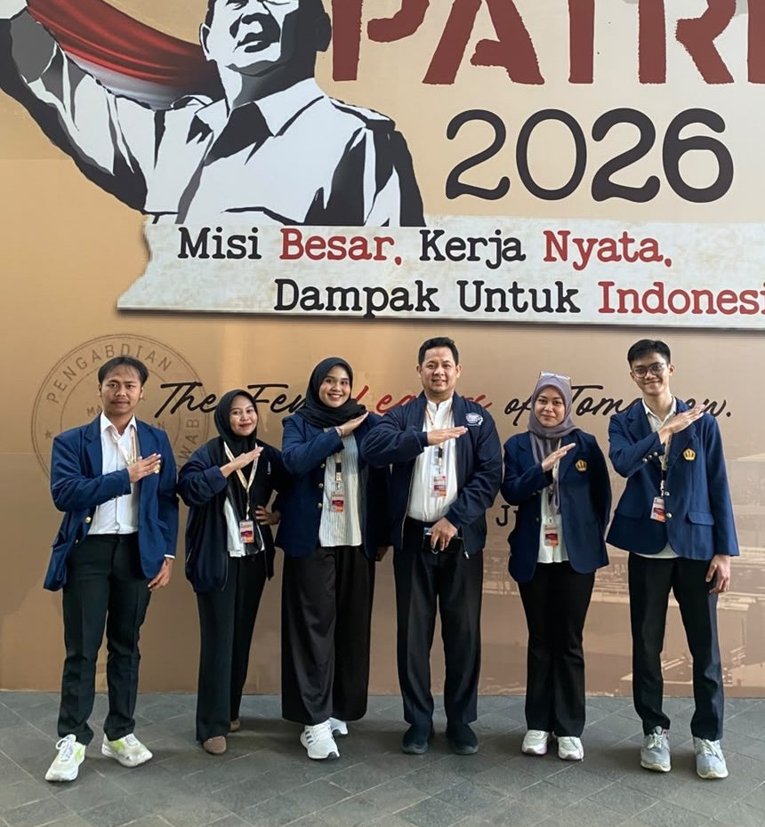
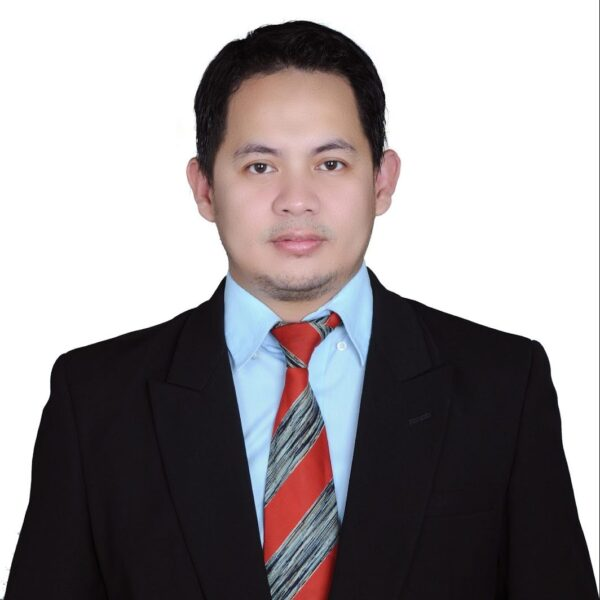
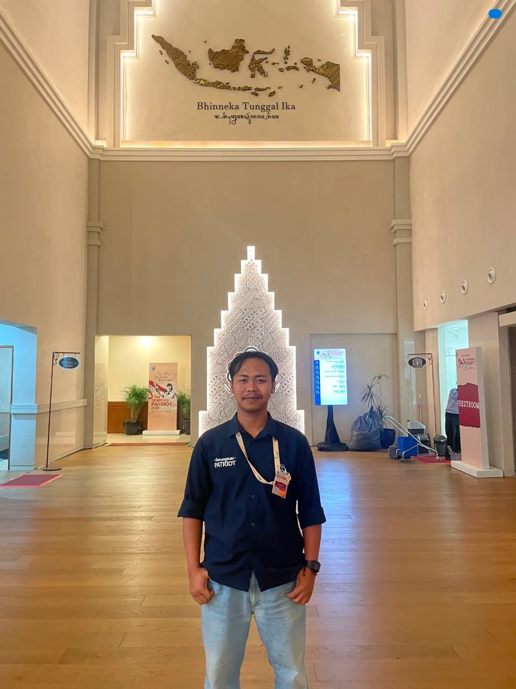
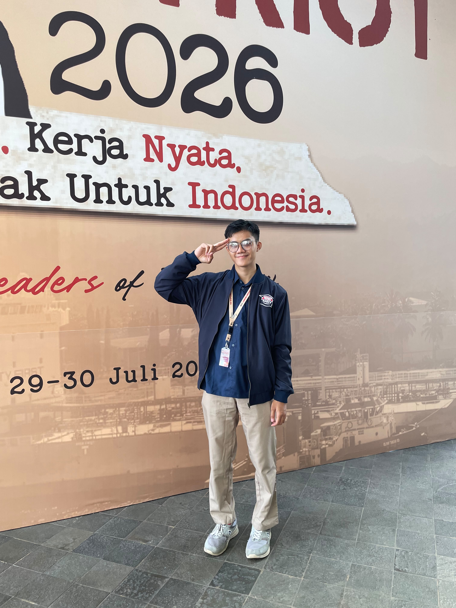
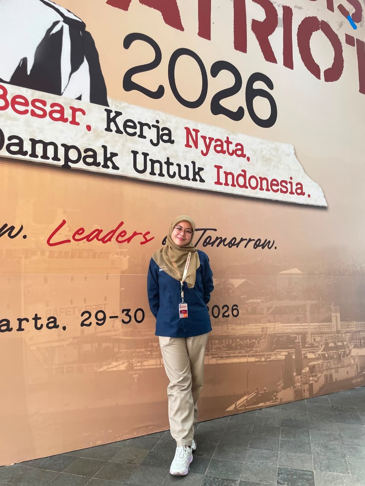
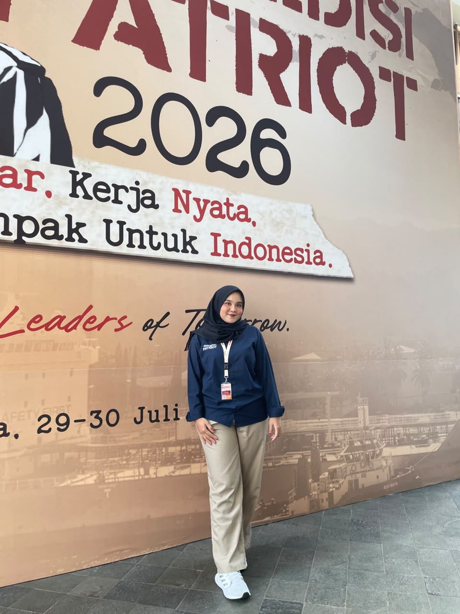
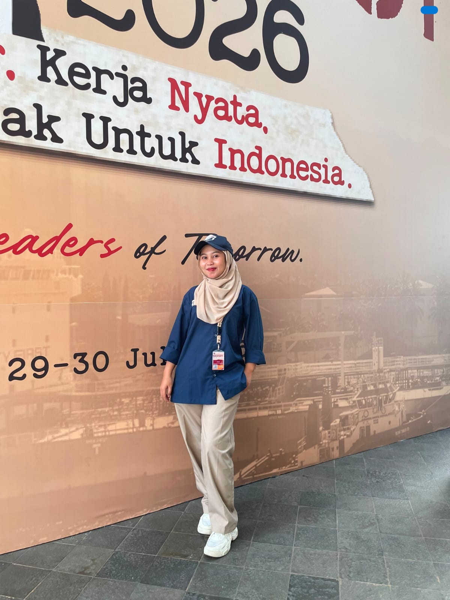

PendekatanRiset & observasi
RISET · KOLABORASI · PENDAMPINGAN
Tim Ekspedisi
Patriot 2026
Bersama mengenali potensi kawasan, mendukung pengembangan ekonomi lokal, dan merumuskan langkah pembangunan yang berkelanjutan.
Fokus kawasan: pertanian jeruk, potensi lokal, dan pemberdayaan masyarakat
KolaborasiTim dan masyarakat
Potensi lokalPertanian dan UMKM
OrientasiPengembangan berkelanjutan
Apa itu TEP?
Tim Ekspedisi Patriot (TEP) merupakan program riset, kajian, dan pendampingan di kawasan transmigrasi yang melibatkan sumber daya manusia dari perguruan tinggi untuk mendukung pengembangan kawasan.
Mengapa kawasan ini penting?
Kawasan memiliki potensi lokal yang dapat dikembangkan. Pengumpulan informasi lapangan membantu mengenali kebutuhan, peluang, dan tantangan sebagai bahan rekomendasi pembangunan.
Fokus Jelai-Nibung
Pengembangan potensi pertanian, khususnya komoditas jeruk, pengolahan hasil, penguatan UMKM, serta pemanfaatan teknologi yang sesuai dengan kebutuhan masyarakat.

Jelai–NibungKecamatan Jelai, Kabupaten Sukamara, Kalimantan Tengah
FOKUS PROGRAM
Beberapa bidang yang menjadi perhatian dalam pengembangan kawasan.
Pertanian & komoditas
Mengenali potensi budidaya dan peluang peningkatan nilai tambah hasil pertanian.
Teknologi tepat guna
Menjajaki pemanfaatan teknologi yang relevan dengan kebutuhan dan kondisi setempat.
Pengembangan UMKM
Mendukung dokumentasi produk, informasi usaha, dan peluang pengembangan pasar.
Pemberdayaan masyarakat
Menguatkan kolaborasi dan pertukaran pengetahuan bersama masyarakat kawasan.
Riset & rekomendasi
Menyusun informasi dan kajian sebagai bahan pertimbangan pengembangan kawasan.
TIM EKSPEDISI PATRIOT
Kenali anggota tim yang berkontribusi dalam kegiatan di kawasan Jelai-Nibung.

Ketua
Gofarana Wilar, Ph.D.
Farmasi
Ketua Ekspedisi
Anggota
Abad Bastian, S.TP.
Teknik Pertanian
Peneliti Utama
Anggota
Furqon Muhammad Zulkifli, S.T.
Teknik Elektro
Pengembangan Website
Anggota
Farah Najwa, S.Kep.
Keperawatan
Koordinator Media
Anggota
Rizky Amalia, S.Agr.
Agribisnis
Koordinator Media
Anggota
Listiana, S.KM.
Kesehatan Masyarakat
Koordinator MediaSilakan periksa kembali ejaan nama, gelar, peran, dan foto tim sebelum website dipublikasikan.